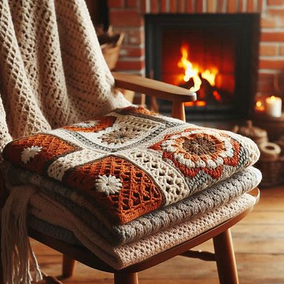
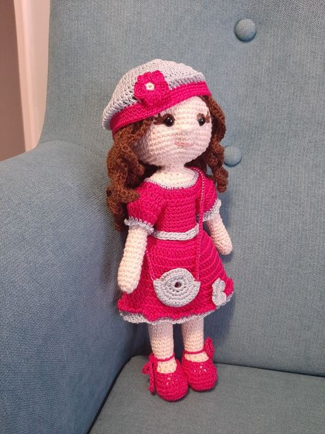

El ganchillo, croché (galicismo de crochet)o tejido de gancho es una técnica para tejer labores con hilo o lana que utiliza una aguja corta y específica, «aguja de ganchillo»o «aguja de croché» de metal, plástico o madera.
El vocablo «ganchillo» es un diminutivo de «gancho», cuyo origen es incierto. La palabra «croché» viene del francés antiguo crochet, un diminutivo de croche, que viene a su vez del alemán croc, que significa «gancho».
Se especula que el ganchillo evolucionó a partir de las prácticas tradicionales árabes, sudamericanas o chinas pero no existen pruebas consistentes de esta labor hasta que se popularizó en Europa durante el siglo XVI.
Algunos escritores especulan que esta técnica era de hecho utilizada por antiguas culturas; pero para tejer, en lugar del típico ganchillo, usaban el dedo índice flexionado, por lo cual no quedaron objetos que confirmen esta práctica. Sin embargo, arguyen la simplicidad de la técnica para proclamar que «debió» existir en periodos antiguos.
Otros escritores apuntan que los tejidos, las urdimbres tricotadas y anudadas sobreviven desde edades muy tempranas, sin embargo no existen evidencias de muestras de tejidos hechos en ganchillos en ninguna colección etnológica o de procedencia arqueológica previa a 1800. Estos escritores señalan las agujas de bordado usadas en bordados sobre bastidor en Francia en el siglo XVIII para aseverar que la técnica de hacer lazos en un entramado fino con bastidor evolucionó hasta la del ganchillo sin bastidor.
A lo largo de todo el mundo el ganchillo se convirtió en una próspera industria casera, en especial en Irlanda y el norte de Francia, sosteniendo comunidades cuyo modo de vida tradicional había sido dañado por las guerras, fluctuaciones en la agricultura y el uso de la tierra y las malas cosechas. Las mujeres, e incluso a veces los niños, se quedaban en casa y tejían ropa, mantas, etc. para conseguir dinero. Los artículos eran comprados principalmente por la emergente clase media.
Los ganchillos vienen en varios tamaños, que se miden en milímetros. El tamaño del ganchillo que necesitas depende del grosor del hilo y del tipo de proyecto que estés realizando. Los tamaños más comunes van desde 2 mm hasta 10 mm
Con un ganchillo, puedes crear una amplia variedad de artículos, desde ropa y accesorios hasta decoraciones para el hogar y juguetes:
Es una técnica de origen japonés que consiste en tejer pequeños muñecos mediante crochet:
Particularmente es una técnica que me encanta.
Con cada punto y cada lazo, se tejen no solo hilos, sino también recuerdos y momentos de paz.
Hasta la próxima vez que nos encontremos, sigue soñando con nuevos proyectos y colores. Se que cuando vuelva a tomar el ganchillo tu también estarás ahí, con tus ganchos y tus hilos.
{kind=link}
{kind=link}
{kind=link}
{kind=link}